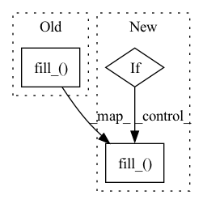

Pattern ID :669
Before Change
if isinstance(self.Norm, nn.BatchNorm2d) or isinstance(
self.Norm, nn.BatchNorm3d
):
m.weight.data.fill_( 1)
m.bias.data.zero_()
// Linear layer
self.classifier = nn.Linear(num_features, num_classes)After Change
if isinstance(m, self.Conv):
m.weight = nn.init.kaiming_normal_(m.weight, mode="fan_out")
elif isinstance(m, self.Norm):
if m.weight is not None:
m.weight.data.fill_( 1)
if m.bias is not None:
m.bias.data.zero_()
// Linear layerIn pattern: SUPERPATTERN
Frequency: 4
Non-data size: 3
Instances Fragment ID: 2366944
Project Name: cbica/gandlf
Commit Name: e88478d412147ca4049baa381cf1ca20b27a9ba4
Time: 2022-01-11
Author: sarthak.pati@hotmail.com
File Name: GANDLF/models/densenet.py
M Class Name: DenseNet
N Class Name: DenseNet
M Method Name: __init__(14)
N Method Name: __init__(14)
M Parent Class: nn.Module
N Parent Class: nn.Module
M File Name: GANDLF/models/densenet.py
N File Name: GANDLF/models/densenet.py
M Start Line: 130
M End Line: 225
N Start Line: 130
N End Line: 223
Before Change
self.mode = mode
assert self.mode in ["LoG", "DoG",]
grayscale = nn.Conv2d(3, 1, kernel_size=1, stride=1, padding=0, bias=False)
grayscale.weight.data.fill_( 1.0 / 3.0)
laplacian_filter = nn.Conv2d(1, 1, kernel_size=5, stride=1, padding=2, bias=False)
if self.mode == "LoG":
laplacian_filter.weight.data[0, 0].copy_(
torch.FloatTensor([[0, 0, 1, 0, 0,],After Change
self.mode = mode
self.use_threshold = use_threshold
assert self.mode in ["LoG", "DoG",]
if to_grayscale:
grayscale = nn.Conv2d(
in_channels=3, out_channels=1, kernel_size=1, bias=False)
grayscale.weight.data.fill_( 1.0 / 3.0)
else:
grayscale = nn.Identity()
laplacian_filter = nn.Conv2d(
in_channels=1, out_channels=1, kernel_size=5, stride=1, Fragment ID: 2366940
Project Name: westlake-ai/openmixup
Commit Name: 1969d56d997a214a2d5f909c64998f458d2009b1
Time: 2022-04-25
Author: 1070535169@qq.com
File Name: openmixup/models/utils/sobel.py
M Class Name: Laplacian
N Class Name: Laplacian
M Method Name: __init__(4)
N Method Name: __init__(2)
M Parent Class: nn.Module
N Parent Class: nn.Module
M File Name: openmixup/models/utils/sobel.py
N File Name: openmixup/models/utils/sobel.py
M Start Line: 39
M End Line: 45
N Start Line: 57
N End Line: 71
Before Change
self.out_channels = out_channels
assert self.out_channels in [1, 2,]
grayscale = nn.Conv2d(3, 1, kernel_size=1, stride=1, padding=0, bias=False)
grayscale.weight.data.fill_( 1.0 / 3.0)
sobel_filter = nn.Conv2d(
1, self.out_channels, kernel_size=3, stride=1, padding=1, bias=False)
w = 1.414214 if self.isotropic else 2
sobel_filter.weight.data[0, 0].copy_(After Change
self.use_threshold = use_threshold
assert self.out_channels in [1, 2,]
if to_grayscale:
grayscale = nn.Conv2d(
in_channels=3, out_channels=1, kernel_size=1, bias=False)
grayscale.weight.data.fill_( 1.0 / 3.0)
else:
grayscale = nn.Identity()
sobel_filter = nn.Conv2d(
in_channels=1, out_channels=self.out_channels, kernel_size=3, stride=1, Fragment ID: 2366939
Project Name: westlake-ai/openmixup
Commit Name: 1969d56d997a214a2d5f909c64998f458d2009b1
Time: 2022-04-25
Author: 1070535169@qq.com
File Name: openmixup/models/utils/sobel.py
M Class Name: Sobel
N Class Name: Sobel
M Method Name: __init__(5)
N Method Name: __init__(3)
M Parent Class: nn.Module
N Parent Class: nn.Module
M File Name: openmixup/models/utils/sobel.py
N File Name: openmixup/models/utils/sobel.py
M Start Line: 11
M End Line: 26
N Start Line: 13
N End Line: 38